To avoid to having to long pages with lessons for you keep scrolling and scrolling, I have divided them in different pages. There are still some lessons we have to go through before continuing the conversations.
I mentioned in lesson 7 that there are 5 rules. For example a lamp will be en lampa. the lamp will be lampan both of the is what they call singular, the 1st one is "Öbestämd" and the 2nd is "Bestämd" form. We have the same forms if there are more than 1 or so to say plural. For example two lamps will be två lampor and the lamps will be lamporna.
Confusing? Do not worry, I will show you.
| En or Ett | Group | Singular Öbestämd | Singular Bestämd | Plural Öbestämd | Plural Bestämd | English | Audio |
|---|---|---|---|---|---|---|---|
| En | 1: words end with a | En lampa | Lampan | lampor | lamporna | A lamp, The lamp, Lamps, The lamps | |
| En | 2: Short words, and words ending with: e/el/en/er/on/ing and ning | En bil | bilen | bilar | bilarna | A car, The car, Cars, The cars | |
| En | 3: words used from other countries | En student | Studenten | Studenter | Studenterna | A student, The student, Students, The students | |
| Ett | 4: words end with e or other vowels | Ett äpple | Äpplet | Äpplen | Äpplena | An apple, The apple, Apples, The apples | |
| Ett | 5: other short words that do not end with a vowels | Ett hus | Huset | Hus | Husen | A house, The house, Houses, The houses |
You see that in rule 5 that the singular and plural öbestämd stay the same. The words end in A and an changes to Or and Orna, while the short words with in group 2 changes to Ar and arna, etc.
Go to the next lesson for more samples and practising. We will have soon another quiz to test your learning skills.
| Group 1 | Singular Öbestämd | Singular Bestämd | Plural Öbestämd | Plural Bestämd | English | Audio |
|---|---|---|---|---|---|---|
| En matta | Mattan | Mattor | Mattorna | A mat, The mat , Mats, The mats | ||
| En tavla | Tavlan | Tavlor | Tavlorna | A painting, The painting , Paintings, The paintings | ||
| En trappa | Trappan | Trappor | Trapporna | A stair, The stair , Stairs, The stairs | ||
| En soffa | Soffan | Soffor | Sofforna | A sofa, The sofa , Sofas, The sofas | ||
| En hylla | Hyllan | Hyllor | Hyllorna | A shelf, The shelf , Shelves, The Shelves | ||
| En kruka | Krukan | Krukor | Krukorna | A pot, The pot , Pots, The pots | ||
| En låda | Lådan | Lådor | Lådorna | A box, The box , Boxes, The boxes |
| Group 2 | Singular Öbestämd | Singular Bestämd | Plural Öbestämd | Plural Bestämd | English | Audio |
|---|---|---|---|---|---|---|
| En hall | Hallen | Hallar | Hallarna | A hall, The hall , Halls, The halls | ||
| 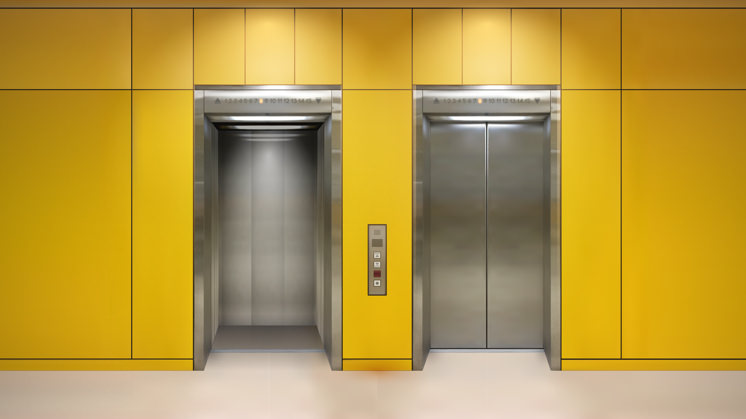 | En hiss | Hissen | Hissar | Hissarna | An elevator, The elevator, Elevators, The elevators | |
| En duk | Duken | Dukar | Dukarna | A tablecloth, The tablecloth, Tablecloths, The tablecloths | ||
| En cykel | Cykeln | Cyklar | Cyklarna | A bike, The bike, Bikes, The bikes | ||
| En bank | Banken | Bankar | Bankarna | A bank, The bank, Banks, The banks | ||
| En tidning | Tidningen | Tidningar | Tidningarna | A newspaper, The newspaper, Newspapers, The newspapers | ||
| En stol | Stolen | Stolar | Stolarna | A chair, The chair, Chairs, The chairs |
You see in group 2 the word Cykel that there is no e between the l and n. I have no clear explanation for this, just that it is something you have the learn, rather than trying to find the logic. Like in every language. Along the way in learning Swedish you will find more examples.
| Group 3 | Singular Öbestämd | Singular Bestämd | Plural Öbestämd | Plural Bestämd | English | Audio |
|---|---|---|---|---|---|---|
| En servett | Servetten | Servetter | Servetterna | A servet, The servet, Servets, The servets | ||
| En diskmaskin | Diskmaskinen | Diskmaskiner | Diskmaskinerna | A dishwasher, The dishwasher, Dishwashers, The dishwashers | ||
| En rullgardin | Rullgardinen | Rullgardiner | Rullgardinerna | A blind, The blind, Blinds, The blinds | ||
| En toalett | Toaletten | Toaletter | Toaletterna | A toilet, The toilet, Toilets, The toilets | ||
| En student | Studenten | Studenter | Studenterna | A student, The student, Students, The students | ||
| En balkong | Balkongen | Balkonger | Balkongerna | A balcony, The balcony, Balconies, The balconies | ||
| En altan | Altanen | Altaner | Altanerna | A terrace, The terrace, Terraces, The terraces |
| Group 4 | Singular Öbestämd | Singular Bestämd | Plural Öbestämd | Plural Bestämd | English | Audio |
|---|---|---|---|---|---|---|
| Ett räcke | Räcket | Räcken | Räckena | A railing, The railing, Railings, The railings | ||
| Ett täcke | Täcket | Täcken | Täckena | A duvet, The duvet, Duvets, The duvets | ||
|
Ett äpple | Äpplet | Äpplen | Äpplena | An apple, The apple, Apples, The apples | |
| Ett frimärke | Frimärket | Frimärken | Frimärkena | A stamp, The stamp, Stamp, The stamps | ||
| Ett yrke | Yrket | Yrken | Yrkena | A profession, The profession, Professions, The professions | ||
|
Ett arbete | Arbetet | Arbeten | Arbetena | A job, The job, Jobs, The jobs | |
| Ett ställe | Stället | Ställen | Ställena | A place, The place, Places, The places |
| Group 5 | Singular Öbestämd | Singular Bestämd | Plural Öbestämd | Plural Bestämd | English | Audio |
|---|---|---|---|---|---|---|
| Ett hus | Huset | Hus | Husen | A house, The house, Houses, The houses | ||
| Ett brev | Brevet | Brev | Breven | A letter, The letter, Letters, The letters | ||
| Ett bord | Bordet | Bord | Borden | A table, The table, Tables, The tables | ||
 |
Ett golv | Golvet | Golv | Golven | A floor, The floor, Floors, The floors | |
| Ett kök | Köket | Kök | Köken | A kitchen, The kitchen, Kitchens, The kitchens | ||
| Ett badkar | Badkart | Badkar | Badkaren | A bathtube, The bathtube, Bathtubes, The bathtubes | ||
| Ett barn | Barnet | Barn | Barnen | A child, The child, Childeren, The Childeren |
In the next lesson I will show more samples, but that are words with an irregular plural and some exceptions. As is group 1 you see that all words with a starts with en but there are words start with ett For example ett öga.
| Irregular and exceptions | Singular Öbestämd | Singular Bestämd | Plural Öbestämd | Plural Bestämd | English | Audio |
|---|---|---|---|---|---|---|
| En bok | Boken | Böcker | Böckerna | A book, The book, Books, The books | ||
| En bonde | Bonden | Bönder | Bönderna | A farmer, The farmer, Farmers, The farmers | ||
| En bror | Brodern | Bröder | Bröderna | A brother, The brother, Brothers, The brothers | ||
| En fot | Foten | Fötter | Fötterna | A foot, The foot, Feet, The feet | ||
| En hand | Handen | Händer | Händerna | A hand, The hand, Hands, The hands | ||
| Ett land | Landet | Länder | Länderna | A country, The country, Countries, The countries | ||
| En sko | Skon | Skor | Skorna | A shoe, The shoe, Shoes, The shoes | ||
| En stad | Staden | Städer | Städerna | A city, The city, Cities, The cities | ||
| En strand | Stranden | Stränder | Stränderna | A beach, The beach, Beaches, The beaches | ||
| Ett öga | Ögat | Ögon | Ögonen | An eye, The eye, Eyes, The eyes | ||
| Ett öra | Örat | Öron | Öronen | An ear, The ear, Ears, The ears |
It is time for a quiz. Go the quiz tab and look up the "Swedish Quiz - Lessons 9 - 16" Good Luck!
In every language you have opposite words, like high - low, Laughing and crying. Sweden has this as well. See some have them below.
| Img 1 | Swe | Img 2 | Swe | Eng | Audio |
|---|---|---|---|---|---|
| Rund | Platt | Round and Flat | |||
 |
Svart | 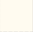 | Vit | Black and White | |
| Torr | Vått | Dry and Wet | |||
| Kall |  |
Varm eller Het | Cold and Warm / Hot | ||
| Ljus | 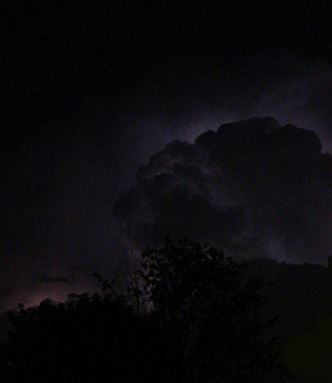 | Mörk | Light and Dark | ||
| 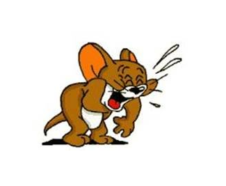 | Rolig |  |
Tråkig | Funny and Boring | |
| 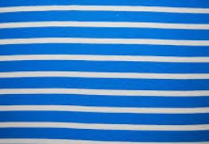 | Randig | 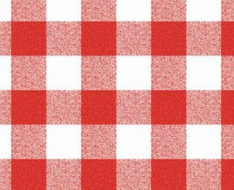 | Rutig | Stripes and Checkered | |
| 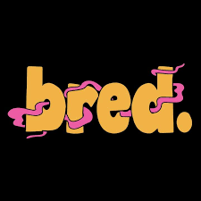 | Bred |  |
Small | Wide and Small | |
| 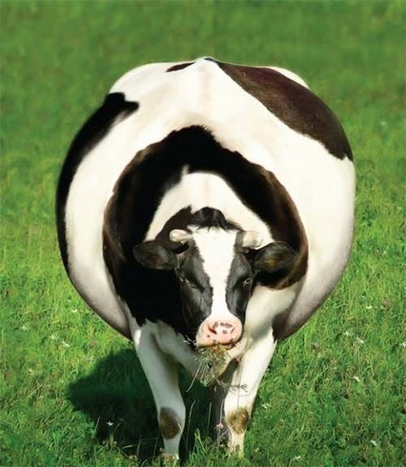 | Fet | 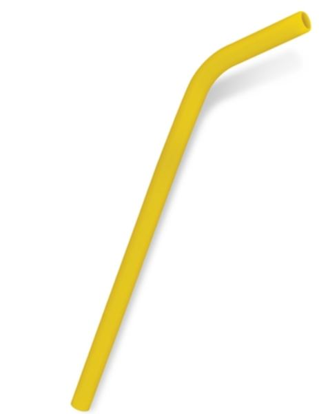 | Tun | Fat and Thin | |
| 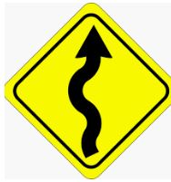 | Krokig | 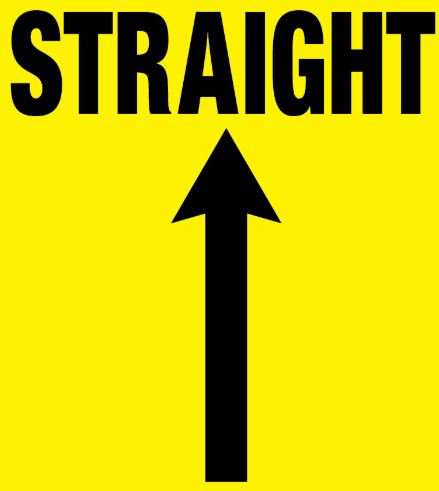 | Rak | Straight and Bend | |
| 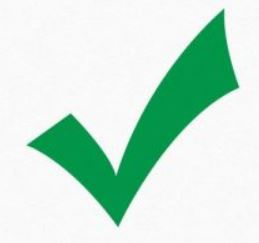 | Rätt | Fel | Right and Wrong | ||
| Frisk | Sjuk | Healthy and Sick | |||
 |
Stark | 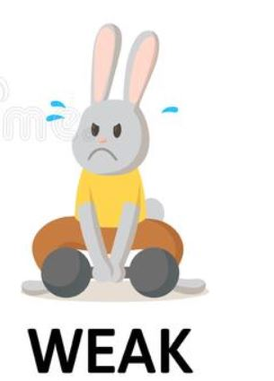 | Svag | Strong and Weak | |
| 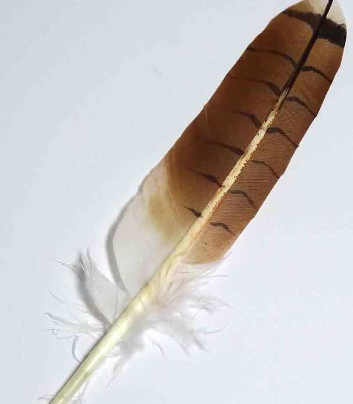 | Lätt | 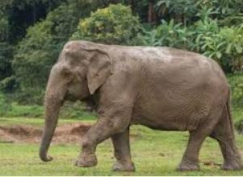 | Tung | Strong and Weak | |
| 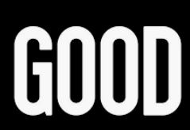 | Bra | 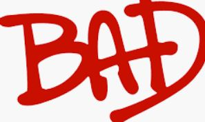 | Dålig | Good and Bad | |
| 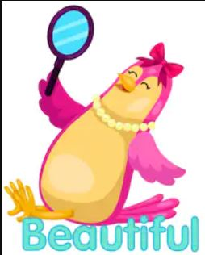 | Vacker and for Man: Snygg | 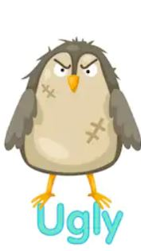 | Ful | Beautiful and Ugly | |
| Lung |  |
Orolig | Relax and Stress | ||
| 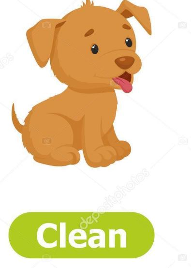 | Ren | 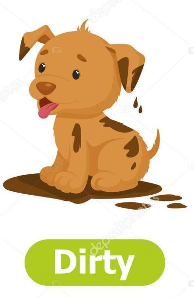 | Smutsig | Clean and Dirty | |
 |
Gammal | 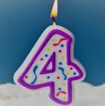 | Ung | Old and Young | |
| 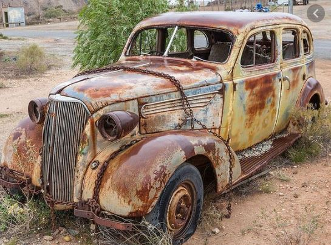 | Gammal | 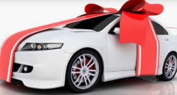 | Ny | Old and New | |
| Rik | 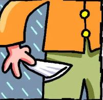 | Fattig | Rich and Poor | ||
| 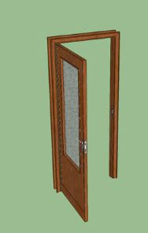 | Öppen | 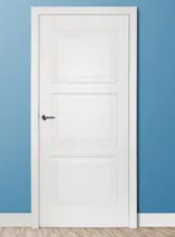 | Stäng | Open and Closed | |
| 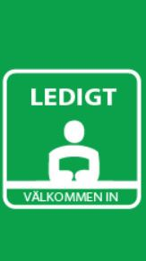 | Ledig | 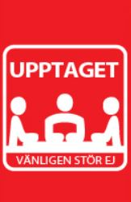 | Upptagen | Free and Busy | |
| 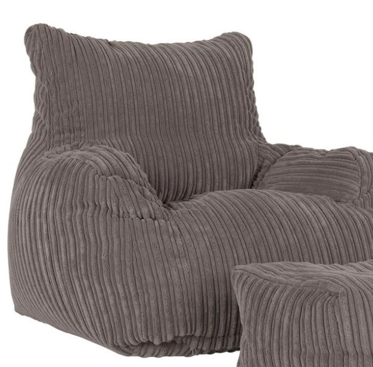 | Mjuk | 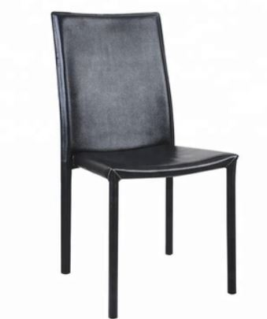 | Hård | Free and Busy | |
| 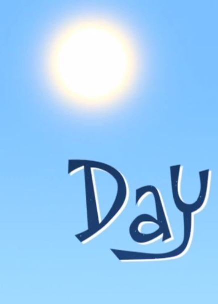 | Dag | Natt | Day and Night | ||
| 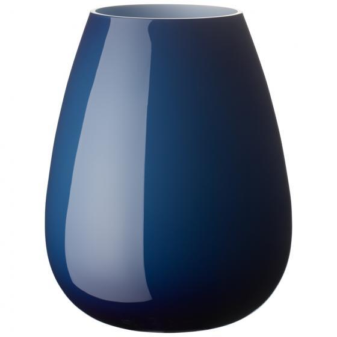 | Hel | 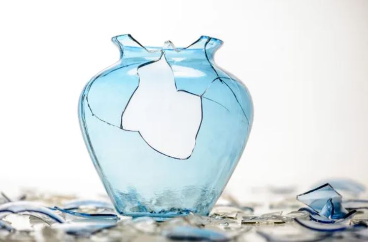 | Trasig | Whole and Broken |